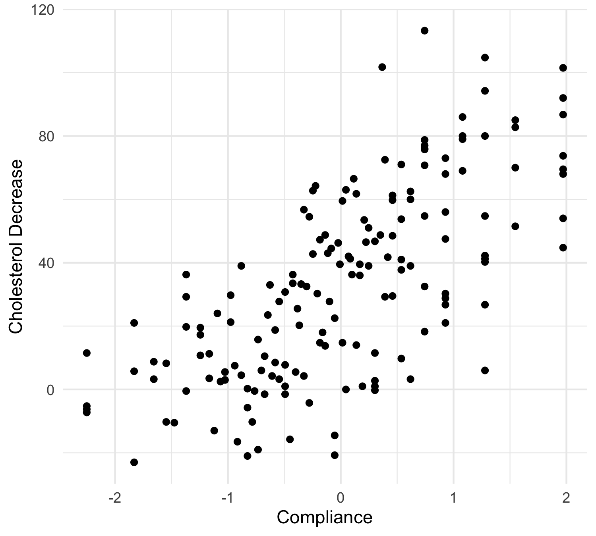
Nonparametric regression
Data Mining - CdL CLAMSES
Tommaso Rigon
Università degli Studi di Milano-Bicocca
Homepage
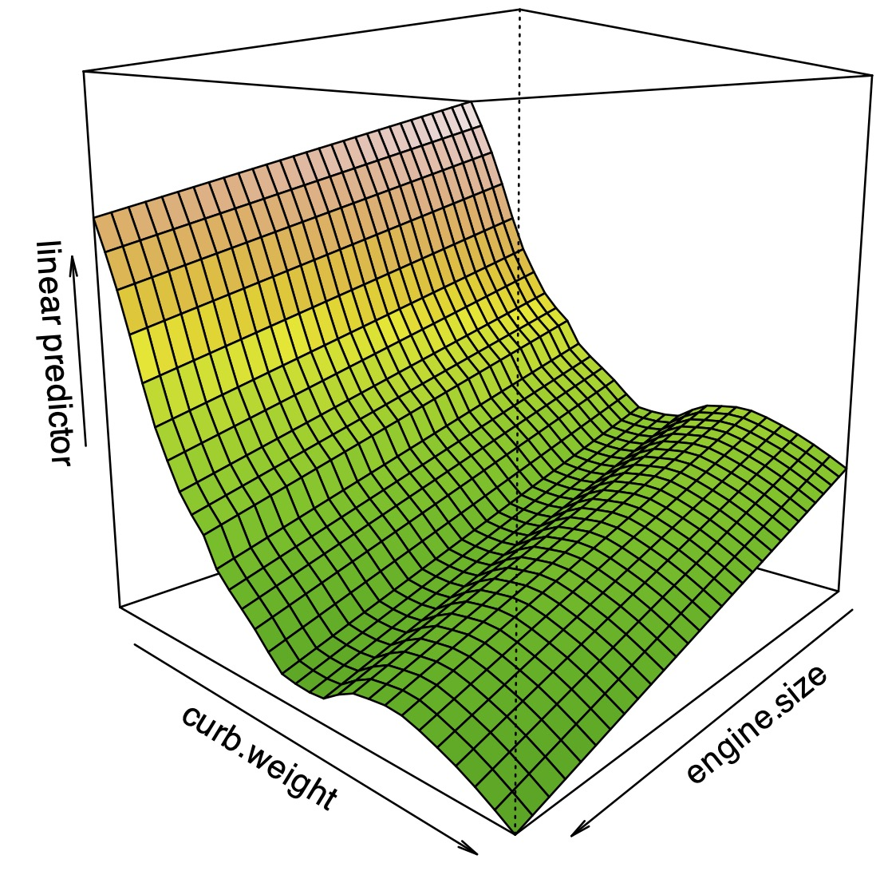
“Nonparametric regression might, like linear regression, become an object treasured both for its artistic merit as well as usefulness.”
Leo Breiman
In this unit we will cover the following topics:
- Kernel methods and local regression;
- Regression splines;
- Smoothing splines.
Let us consider again the relationship between a response variable Y_i and a set of covariates \bm{x}_i: Y_i = f(\bm{x}_i) + \epsilon_i, \qquad where \epsilon_i are iid with \mathbb{E}(\epsilon_i) = 0 and \text{var}(\epsilon_i) = \sigma^2.
We do not believe f(\bm{x}) is a polynomial or any other parametric function.
Can we fit a nonparametric relationship that does not make strong assumptions on f(\bm{x})? Let us review some old dataset…
Motivating applications
The cholesterol data
A drug called “cholestyramine” is administered to n = 164 men.
For each man, we observe the pair (x_i, y_i).
The response y_i is the decrease in cholesterol level over the experiment.
The covariate x_i is a measure of compliance.
We assume, as before, that the data are generated according to Y_i = f(x_i) + \epsilon_i, \quad i=1,\dots,n.
In Unit B we fit a polynomial with degree 3, although there was some uncertainty.
The auto dataset
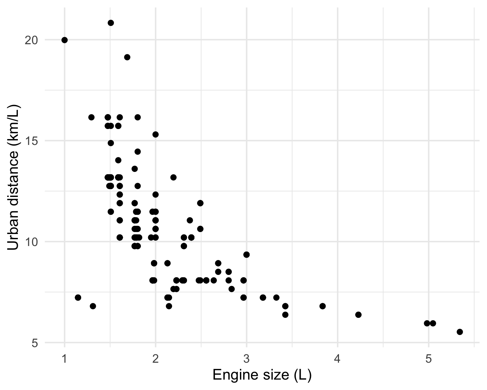
In Unit A we considered the
autodataset.We wanted to model the relationship between
city.distance(y) andengine.size(x).The chosen model involved a non-linear function Y_i = f(x_i) + \epsilon_i, \qquad i=1,\dots,n, where f(x) was “manually” selected.
There are no reasons to believe that f(x) = \alpha + \beta\log{x} or f(x) has any other parametric function.
We would like the data to “speak for themselves”.
The mcycle dataset
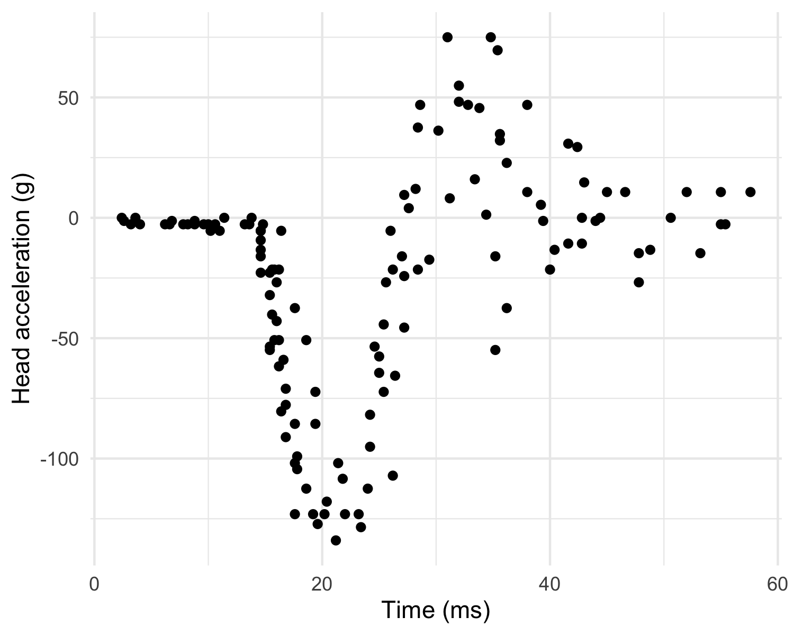
Data consist of variables y accelerometer (
accel) readings, taken through time x (times).The n = 133 observations were measured during a simulated motor-cycle crash experiment, for testing the efficacy of crash helmets.
Some characteristics of the data:
- The time points are not regularly spaced and sometimes there are multiple observations;
- The observations are subject to error;
- The errors \epsilon_i are probably heteroschedastic, but let us ignore this for the moment.
It is of interest to discern the general shape of the underlying acceleration curve.
Old friends: polynomials
- In the
mcycledataset it is not obvious which parametric function we should consider, therefore this route is not an option.
The theory says that polynomials can approximate a large class of functions, as a consequence of Taylor’s expansion theorem.
In the statistical practice, however, polynomial regression is not very well suited for modelling complex relationships.
When performing flexible regression we would expect the prediction at x_i to depend on observations close to x_i. However, polynomials are not local.
Instead, in polynomial regression points that are far away from x_i have a big impact on \hat{f}(x_i). This produces spurious oscillations at the boundaries and unstable estimates.
This is known as Runge’s phenomenon in numerical analysis.
Old friends: polynomials (mcycle data)
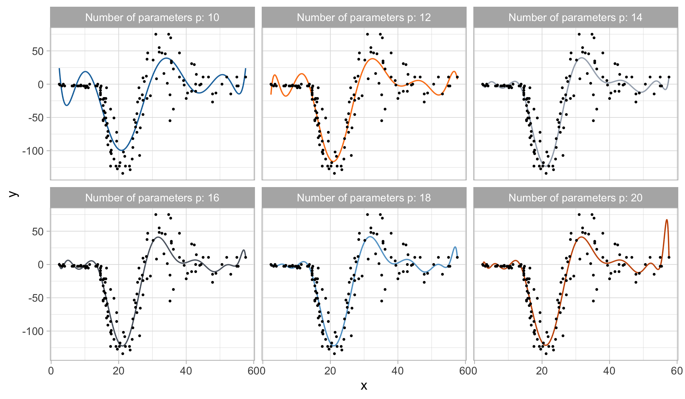Local regression
The regression function
Let us recall again that the only assumption we are making is that Y_i = f(x_i) + \epsilon_i, \qquad i=1,\dots,n, where \epsilon_i are iid with \mathbb{E}(\epsilon_i) = 0 and \text{var}(\epsilon_i) = \sigma^2.
In Unit B we showed that under the following quadratic loss \mathbb{E}\left[\{\tilde{Y}_i - \hat{f}(x_i)\}^2\right], the best prediction \hat{f}(x_i), i.e. the one minimizing the loss, coincides with \hat{f}(x_i) = \mathbb{E}(\tilde{Y}_i) = f(x_i), which is the conditional expectation of Y_i given the value x_i, called regression function.
The regression function f(x_i) = \mathbb{E}(\tilde{Y}_i) is the optimal prediction even in presence of heteroschedastic data or when the above additive decomposition does not hold.
Local estimates of the prediction
We do not know f(x), but the previous formulas suggest that we could consider an arithmetic average of the data points.
Hence, a prediction for a generic value x could be obtained as follows: \hat{f}(x) = \frac{1}{n_x}\sum_{i : x_i = x} y_i, \qquad n_x = \sum_{i=1}^n I(x_i = x).
This idea, unfortunately, does not work in most practical cases.
Indeed, in a typical dataset it is very unlikely that there exist observations exactly equal to x among the points (x_i, y_i).
Even if there were values such that x_i = x, the sample size n_x would often be so small (e.g. n_x = 1) that the variance of \hat{f}(x) would be too high, making this estimator useless.
- On the other hand, this idea seems intuitively appealing. Is there a way to “fix” it?
K-nearest neighbours
Instead of considering the values exactly equal to x, we could identify the pairs (x_i, y_i) that are close to (i.e. in a neighbour of) x.
A natural measure of proximity between x and the data points x_i is the Euclidean distance |x_i - x|, but in principle any other metric could be used.
We consider an average of the k values y_i whose x_i are nearest to x, that is: \hat{f}(x) = \frac{1}{|\mathcal{N}_x|}\sum_{i \in \mathcal{N}_x} y_i, where \mathcal{N}_x is indeed the set of k points nearest to x in Euclidean distance.
This method is called k-nearest neighbours (KNN).
K-nearest neighbours (k = 6)
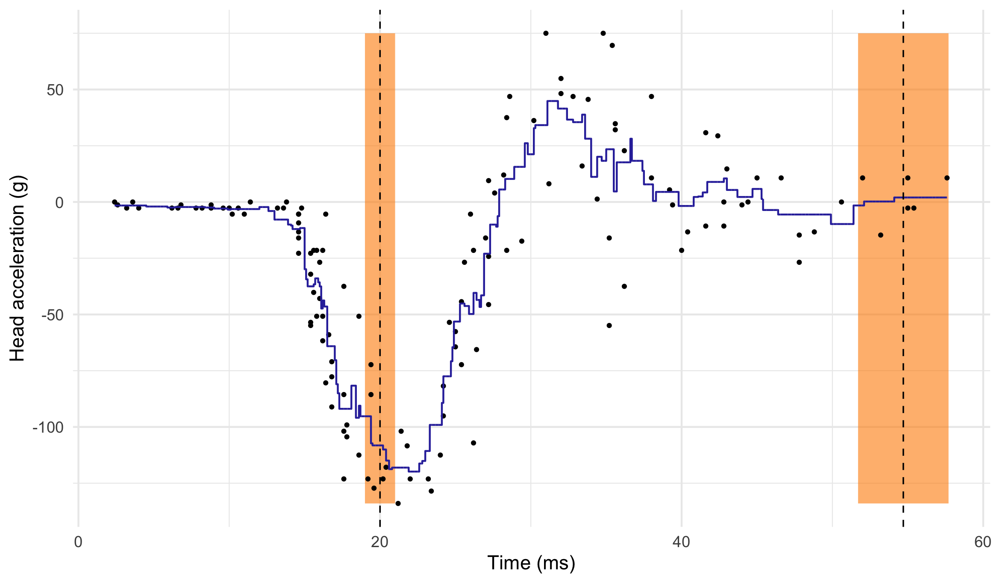Limitations of the k-nearest neighbor method
The number of neighbours k influences how “local” is the estimate.
The case k = 1 is unsatisfactory, because the average is based on a single data point. On the other hand, the case k = n produces a constant (average of all the observations).
Hence, there is a clear bias-variance trade-off in the choice of k, which should be selected e.g. via cross-validation.
The k-nearest neighbours produces a sensible result, but the method can be improved.
The blue curve is bumpy, because \hat{f}(x) is discontinuous in x.
Indeed, as we move x from left to right, the k-nearest neighborhood remains constant, until a new point x_i to the right of x is included and one to the left is excluded.
This discontinuity is ugly and unnecessary. We are looking instead for a smooth prediction.
Nadaraya-Watson estimator
- The Nadaraya-Watson estimator addresses these issues. It is a weighted average \hat{f}(x) = \frac{1}{\sum_{i'=1}^n w_{i'}(x)}\sum_{i=1}^n w_i(x) y_i = \sum_{i=1}^n s_i(x) y_i, where s_i(x) = w_i(x) / \sum_{i'=1}^n w_{i'}(x) are the normalized weights.
- The values w_i(x) \ge 0 are chosen so that the points x_i close to x are weighted more.
A convenient way of selecting these weights is through kernel functions: w_i(x) = \frac{1}{h}w\left(\frac{x_i - x}{h}\right), \qquad i=1,\dots,n, where w(\cdot) is a symmetric density function around the origin, called kernel in this context.
The value h > 0 is a scale factor, sometimes called bandwidth or smoothing parameter.
Nadaraya-Watson estimator: comments
The fitted function \hat{f}(x) is continuous and is obtained by computing several weighted averages, one for each value of x.
A popular kernel is the Gaussian kernel, that is: w_i(x) = \frac{1}{h} \phi\left(\frac{x_i - x}{h}\right), \qquad i=1,\dots,n, so that h^2 represents the variance. We will discuss alternative choices later on.
The most important factor, however, is not the functional form of w(\cdot), but rather the smoothing parameter h, which is a complexity parameter.
Indeed, h defines the “smoothing window” on the x-axis, i.e. the relevant data points that are considered for \hat{f}(x).
As any complexity parameter, h should be chosen via cross-validation or related ideas.
Nadaraya-Watson (Gaussian kernel)
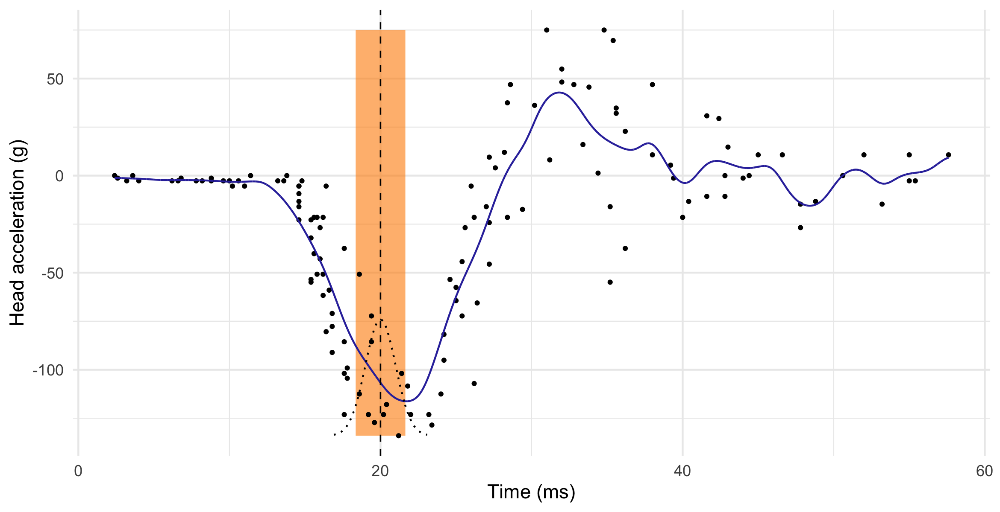
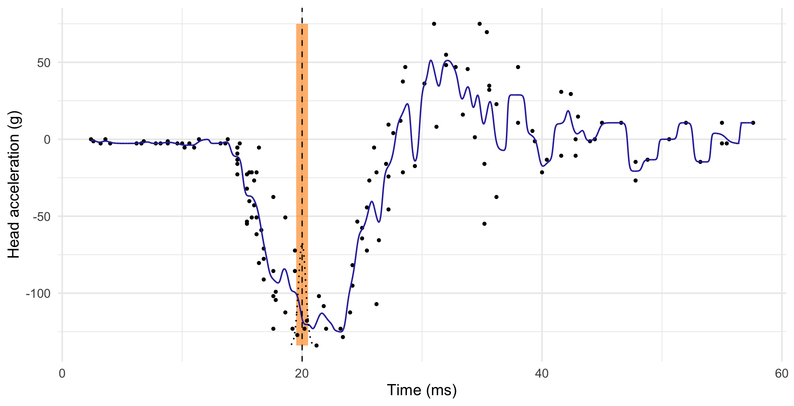
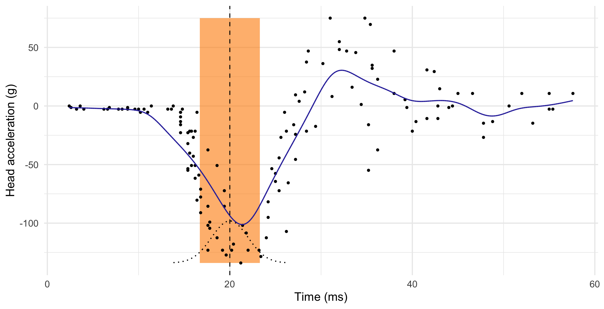
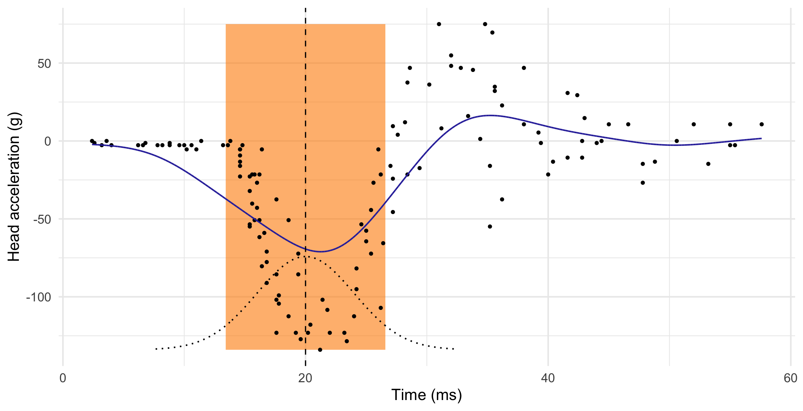
Local linear regression I
Local linear regression is a refinement of the Nadaraya-Watson estimator that has typically lower bias, especially at the boundaries, without noticeable increases in variance.
If f(x) is differentiable, then it can be approximated with a linear function tangent in x_0: f(x) = \underbrace{f(x_0)}_{\beta_1} + \underbrace{f'(x_0)}_{\beta_2}(x - x_0) + \text{rest}.
Hence, instead of computing a local average (\beta_2 = 0), we consider a local linear model. In other words, for every x we seek the coefficients solving: (\hat{\beta}_1, \hat{\beta}_2) = \arg\min_{(\beta_1, \beta_2)} \sum_{i=1}^n \textcolor{darkblue}{w_i(x)}\left\{y_i - \beta_1 - \textcolor{red}{\beta_2(x_i - x)}\right\}^2.
Once the parameter \hat{\beta}_1 and \beta_2 are obtained, the local linear regression estimator is \hat{f}(x) = \hat{\beta}_1 + \hat{\beta}_2 (x - x) = \hat{\beta}_1.
Local linear regression II
The local linear regression, as we have seen in Unit A, has an explicit solution: \hat{\beta} = (\bm{X}^T\bm{W}_x\bm{X})^{-1}\bm{X}^T\bm{W}_x\bm{y}, where the rows of \bm{X} are \bm{x}_i = (1, x_i - x) and \bm{W}_x = \text{diag}\{w_1(x),\dots,w_n(x)\}.
In practice, we do not need to solve this linear algebra problem. An even more explicit and non-iterative solution can be found (see Exercises).
Theorem (Local linear smoothing)
The local linear regression smoother, evaluated in x, admits an explicit expression: \hat{f}(x) = \frac{1}{n}\sum_{i=1}^n \frac{w_i(x) \{a_2(x) - (x_i - x) a_1(x)\}}{a_2(x)a_0(x) - a_1(x)^2 } y_i = \sum_{i=1}^n s_i(x) y_i, where a_j(x) = n^{-1}\sum_{i=1}^n w_i(x) (x_i - x)^j, for j=0,1,2.
Local linear regression (h = 1.45, Gaussian kernel)
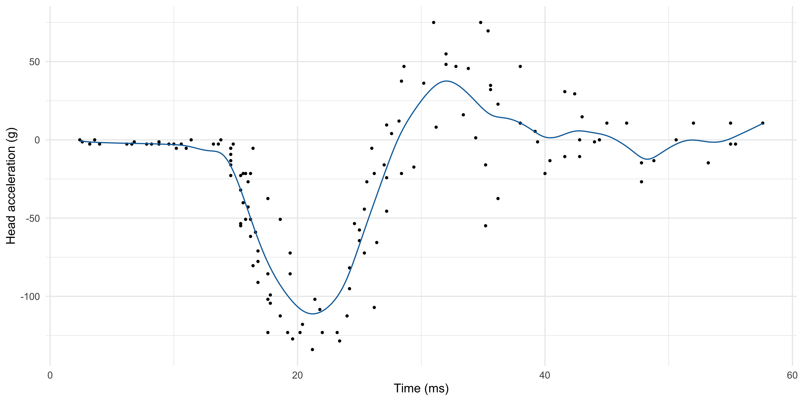Linear smoothers I
- The Nadaraya-Watson estimator and local linear regression are special instances of linear smoothers, which are estimators admitting the following form: \hat{f}(x) = \sum_{i=1}^ns_i(x) y_i.
We will study other members of this class, such as regression and smoothing splines.
Polynomial regression, ridge regression, Gaussian processes and moving averages are also linear smoothers.
- The mean (and hence the bias), and the variance of a linear smoother can be easily obtained: \mathbb{E}\{\hat{f}(x)\} = \sum_{i=1}^n s_i(x)f(x_i), \qquad \text{var}\{\hat{f}(x)\} = \sigma^2\sum_{i=1}^ns_i(x)^2.
Linear smoothers II
- In linear smoothers, we can express the predicted values \hat{\bm{y}} using matrix notation \hat{\bm{y}} = \sum_{i=1}^n\bm{s}_i \bm{y} = \bm{S}\bm{y}, \qquad \bm{s}_i = (s_1(x_i), \dots, s_n(x_i))^T, where \bm{S} = (\bm{s}_1,\dots,\bm{s}_n)^T is the so-called n \times n smoothing matrix.
- Each row of the smoothing matrix \bm{s}_i is called equivalent kernel for estimating \hat{f}(x_i); in the Nadaraya Watson estimator \bm{s}_i is indeed a normalized kernel.
The weights of all the smoothers we will use have are such that \sum_{i=1}^ns_i(x) = 1 for all x.
Hence, the smoother preserves constant curves, namely if all y_i = c, then \hat{f}(x) = c.
On the choice of the kernel
- As mentioned before, the choice of the kernel is not crucial. Some alternatives are:
| Kernel | w(x) | Support |
|---|---|---|
| Gaussian | \frac{1}{\sqrt{2 \pi}}\exp{\left(-\frac{x^2}{2}\right)} | \mathbb{R} |
| Rectangular | \frac{1}{2} | (-1, 1) |
| Epanechnikov | \frac{3}{4}(1 - x^2) | (-1, 1) |
| Bi-quadratic | \frac{15}{16}(1 - x^2)^2 | (-1, 1) |
| Tri-cubic | \frac{70}{81}(1 - |x|^3)^3 | (-1, 1) |
- Some asymptotic considerations lead to the choice of the “optimal” Epanechnikov kernel.
Bounded kernels have computational advantages, because one needs to compute averages of a limited number of data points.
On the other hand, bounded kernels may lead to discontinuous derivatives of \hat{f}(x) that could be unappealing in certain contexts.
Bias-variance tradeoff
Theorem (Fan and Gijbels, 1996, Theorem 3.1)
Let (X_i, Y_i) be iid random vectors with g(x) denoting the marginal density of X_i. The conditional law is such that Y_i = f(X_i) + \epsilon_i, with \epsilon_i iid and \mathbb{E}(\epsilon_i) = 0, \text{var}(\epsilon_i) = \sigma^2.
Moreover, suppose g(x) > 0 and that g(\cdot) and f''(\cdot) are continuous in a neighborhood of x. Then, as h \rightarrow 0 and n h \rightarrow \infty we have that for the local linear regression \hat{f}(x) the bias is \mathbb{E}\{\hat{f}(x) - f(x) \} \approx \frac{\textcolor{red}{h^2}}{2}\sigma^2_w f''(x), where \sigma^2_w = \int z^2 w(z)\mathrm{d}z. In addition, the variance is \text{var}\{\hat{f}(x)\} \approx \frac{\sigma^2}{\textcolor{darkblue}{n h}} \frac{\alpha_w}{g(x)}, where \alpha_w = \int w^2(z)\mathrm{d}z.
Bias-variance tradeoff II
The previous theorem shows that bias is of order h^2 and the variance is of order (1 / nh).
Once again, there is a trade-off because we would like h \rightarrow 0 but, at the same time, we need to keep the variance under control.
- We can select h so that the asymptotic mean squared error is minimal. This leads to the following optimal choice for the bandwidth: h_\text{opt}(x) = \left(\frac{1}{n} \frac{\sigma^2 \alpha_w}{\sigma^4_w f''(x)^2 g(x)}\right)^{1/5}.
Unfortunately, h_\text{opt}(x) is of little practical utility, as it involves the unknown terms f''(x), g(x) and \sigma^2. However, it highlights two important facts:
The bandwidth h should decrease at the rate n^{-1/5}, i.e. quite slowly.
If we plug-in h_\text{opt}(x) into the bias/variance formulas, we get that the mean squared error \rightarrow 0 at the rate n^{-4/5}, which is much slower than the parametric case n^{-1}.
Choice of the bandwidth I
Choice of the bandwidth II
☠️ - Bias reduction of local linear regression
Loess I
Loess II
Local likelihoods I
Local likelihoods II
The bivariate case I
The bivariate case II
Regression splines
Smoothing splines
Penalized splines
References